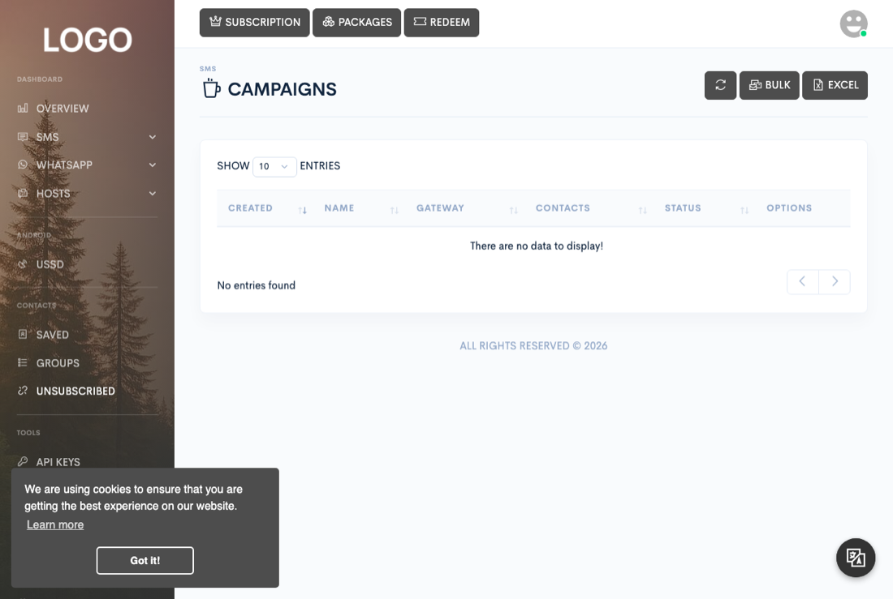

Messaging
Campaigns
A campaign is a named, grouped bulk send — the record that lets you see, at a glance, how a specific blast is doing and clean it up afterward. There's no separate campaign-builder screen; you create one from the same forms used for one-off bulk sending, on the SMS and WhatsApp Campaigns pages. This page covers what's specific to campaigns — for the mechanics of composing and targeting a send, see the SMS and WhatsApp pages.

Creating a campaign
Both Bulk send and Send from Excel — for SMS and for WhatsApp — open with a required Campaign name field. Submitting the form creates one campaign and one queued message per recipient under it, whether those recipients came from pasted numbers, selected contact groups, or an uploaded spreadsheet. Recipients are split evenly across whichever devices, gateways, or WhatsApp accounts you selected for the send.
Scheduling instead of sending immediately
To send later instead of right away, use Schedule a message from the Scheduled page rather than the Campaigns page. The form takes the same recipients, message, and device/gateway or account fields as a bulk send, plus a date and time and an optional repeat interval (in days) for a recurring schedule.
Spintax for message variation
Every bulk and scheduled send form supports spintax, so a campaign doesn't send
the exact same wording to every recipient. Wrap alternatives in curly braces
separated by pipes — {good|bad} — and one is picked at random per
message; groups can be nested inside each other.
Shortening links
Every send form — quick, bulk, and Excel alike — offers a Link shortener dropdown. Selecting one runs every URL in your message through it before sending, replacing the original link with the shortened one. Shorteners aren't built in; an administrator installs them one at a time from Admin → Shorteners, and once installed, a shortener becomes selectable in every user's send forms.
Monitoring progress
The Campaigns table lists every campaign with its creation date, name, the device/gateway or account it's sending from, the total recipient count, and a live status column: Completed once nothing from the campaign is left pending, or Processing (X of Y sent) while messages are still queued.